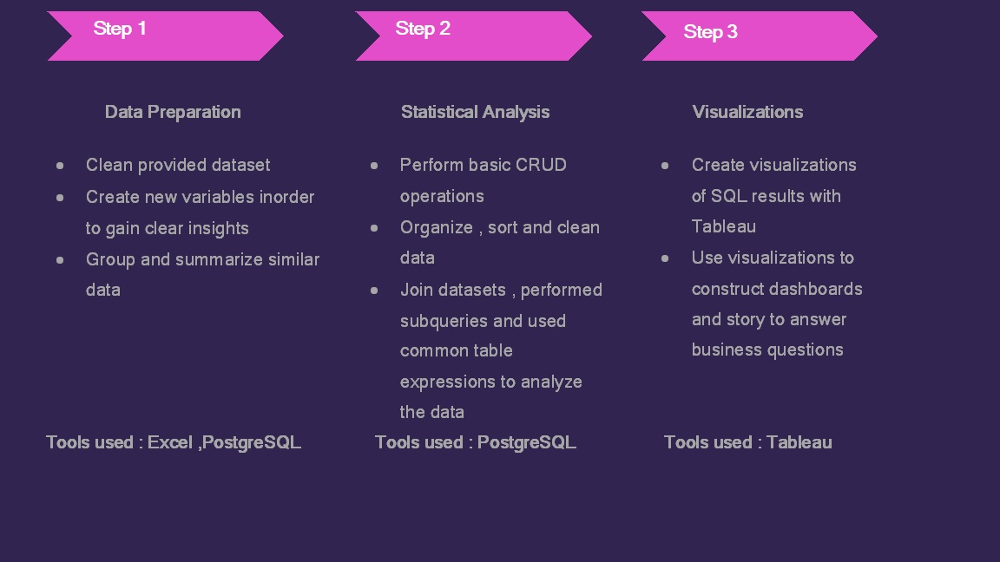
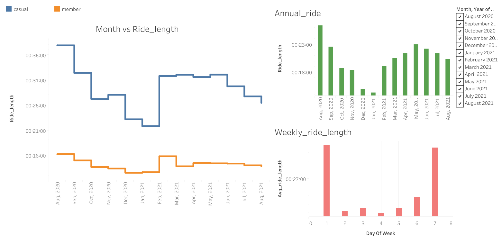

Bike Share Analysis
Goal
- Understand how casual riders and annual members use bikes differently.
- Design new marketing strategy to convert casual riders to annual members.
Data Source
Data has been made available by Motivate International Inc.
Analysis
Results and Visualization
- Casual riders seems to have higher ride length than members.So they can be persuaded to take eannual membership.
- Usage starts to peak from May - June months and then reduces by August.So giving some promotional offers at this time would be benefitial.
- Weekends seems to be more busier than weekdays.
To see the full story Click here